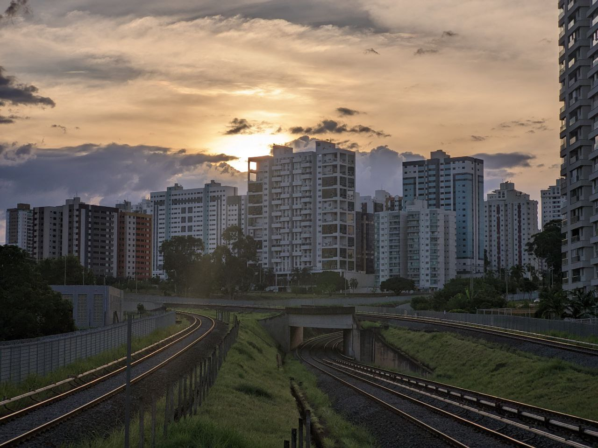
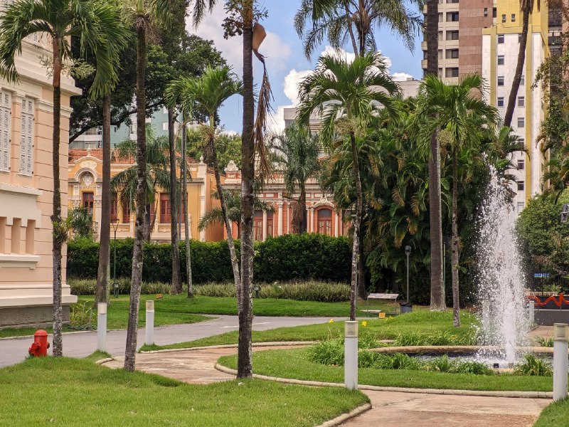
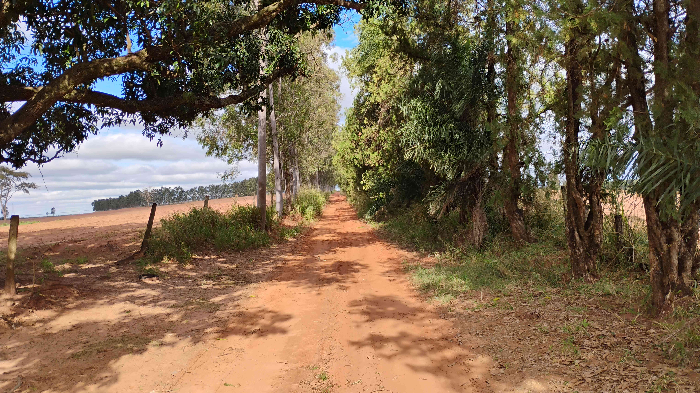
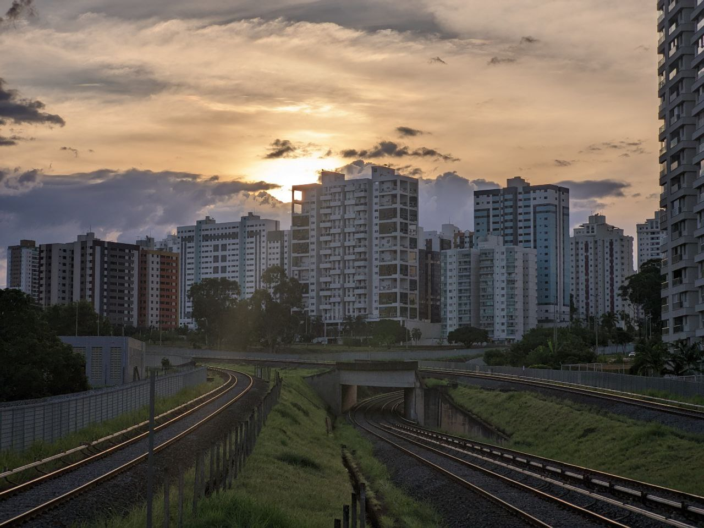
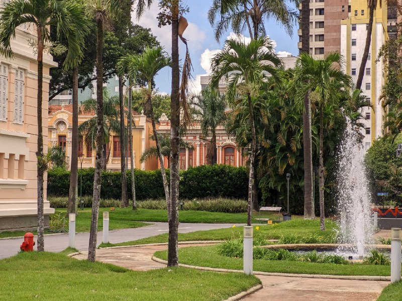
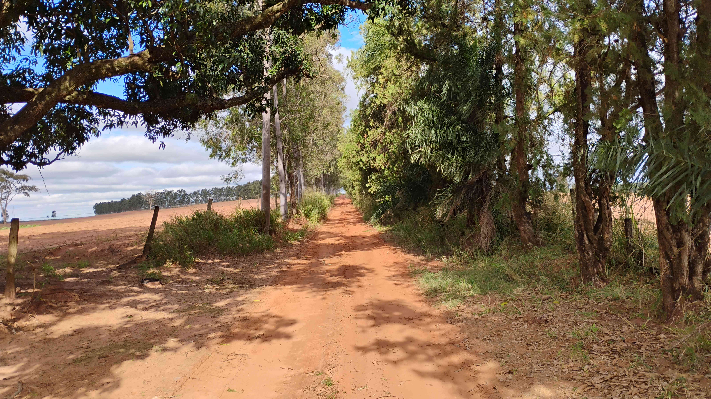

CultivaTech
 





Foto 2 e 3 tiradas por Gustavo
As demais foram tiradas por Victor
O Campo
A importância do campo para a sociedade
O campo é a base da nossa alimentação, da economia e, cada vez mais, da inovação. Com tratores autônomos, sensores no solo e drones, o produtor rural monitora tudo em tempo real, ganhando eficiência e cuidando melhor do meio ambiente. Técnicas como a rotação de culturas, o plantio direto e o uso de energias renováveis, como a solar e a eólica, mostram que é possível produzir com responsabilidade. No campo atual, tradição e tecnologia caminham juntas, moldando um futuro mais sustentável.
Eficiência na Produção
Automação e agricultura de precisão permitem o uso racional de insumos, aumentando a produtividade e reduzindo desperdícios.
Monitoramento Ambiental
Sensores e drones auxiliam na coleta de dados sobre o solo, a água e o clima, facilitando decisões sustentáveis.
Energias Renováveis
Adoção de fontes de energia limpa, como solar e eólica, contribui para a redução da pegada de carbono.
Desafios que são enfrentados
Resíduos eletrônicos: O descarte inadequado pode causar poluição e danos à saúde.
Consumo excessivo de energia: O aumento no uso de dispositivos pode sobrecarregar as fontes disponíveis.
Desigualdade de acesso: Nem todos têm acesso igual às tecnologias, ampliando disparidades sociais.
A Cidade
Desafios e oportunidades urbanas
As cidades são centros de inovação, consumo e transformação social. No entanto, enfrentam grandes desafios como poluição, mobilidade e desigualdade. A sustentabilidade urbana se torna essencial para garantir qualidade de vida. Medidas como o uso de energia solar, coleta seletiva, hortas comunitárias e políticas de incentivo à economia circular vêm sendo adotadas cada vez mais. Além disso, aproximar o campo da cidade, por meio de feiras de produtores, compras diretas e educação ambiental, fortalece a conexão entre quem produz e quem consome, promovendo uma sociedade mais justa e consciente.
Hortas Urbanas
Transformam terrenos ociosos em espaços verdes e produtivos. Além de alimento, geram integração social.
Coleta Seletiva
Ajuda a reduzir o lixo nos aterros, facilita a reciclagem e gera renda para cooperativas.
Energia Solar
Edifícios com painéis solares ajudam a economizar energia e reduzir emissões de carbono.
Nossa galeria
Esta galeria mostra um pouco da vivência no campo e como ela se conecta com a cidade. Através das fotos, quero destacar a importância da natureza, do trabalho no meio rural e das transformações que acontecem quando a tradição e a tecnologia caminham lado a lado. Cada imagem representa meu olhar sobre um futuro com mais equilíbrio, respeito e união entre o campo e a cidade.

Integração Campo-Cidade
Conexão para um futuro sustentável
A cooperação entre campo e cidade fortalece a sociedade. A cidade oferece tecnologia, educação e mercado; o campo abastece com alimentos e recursos naturais. Ferramentas digitais e apps facilitam essa conexão, aproximando produtores e consumidores. Feiras locais, hortas urbanas, transporte eficiente e comércio justo são pontes que geram desenvolvimento econômico, social e ambiental para todos.